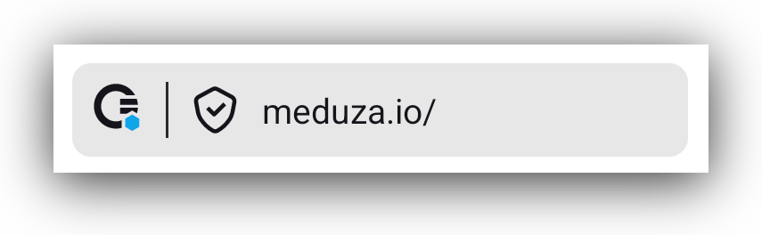
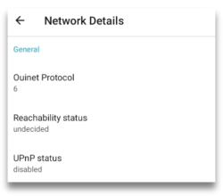

Ceno Browser
Share the Web! Ceno is the world's first web browser that gets better with every installation. Offering a common Internet browsing experience, it relies on a peer-to-peer technology to deliver and share websites among all participants. Ceno can also be used to bypass network restrictions and browse content during a shutdown.
üîì üëÄ Access blocked media and other websites. Free and anonymous in Personal Mode.
üö´üå¥ In case of a internet shutdown in your region, you will still be able to read news and stay connected.
üì±ü§ùüì± Live in a country with free internet access? Help people in other countries bypass censorship and access independent information with just one tap. Learn more on our website.
üìñüëê Ceno Browser is built on Ouinet, an open-source library. You can check the app‚Äôs code on GitLab.
üõ†ü¶πüèª Our product may experience instability due to the constant evolution of censorship technologies. We are continuously improving it to ensure you maintain access. If websites load slowly or don‚Äôt open, please don‚Äôt delete the app ‚Äî try using it again in a few days or contact our support team: support [at] ceno [dot] app
Ceno is developed by eQualitie. It is a completely free and open source browser that doesn’t require registration and is completely ad-free.
We collect some anonymized app and network metrics. No personal information is collected and the data is never shared with third-parties. Metrics collection is enabled by default, users can opt-out of it any time via the Settings > Background metrics > Ceno Metrics toggle. Please refer to our Privacy Policy for more information about what we collect.
Introduction
Ceno is a mobile web browser based on Mozilla Android Components. It is designed for accessing and distributing web content (websites) using a novel approach that relies on BitTorrent – a decentralized file sharing network. Ceno's advantage comes from side-stepping current Internet censorship methods and allowing people to access and share web information in and across regions where connectivity has been interrupted or compromised.
Ceno Browser allows you to access any website on the Internet, even if it is not normally accessible in your country or region.
If a website you want to visit is accessible, Ceno will access it directly and behave like any other browser. But if you are not able to access the desired website directly, Ceno will attempt to access it through its own peer-to-peer network. Ceno will cache the accessed website contents and make them available to other Ceno users utilising the peer-to-peer technology.
When other members of the Ceno network request the same contents and they are not able to access them directly, Ceno will identify that the requested website content is stored in the cache of your Ceno app. From there, it will be uploaded from your device to the internet and redirected to the person who requested it. In the Settings of your Ceno app, you will be able to see how much data has been stored on your device and all the websites you have shared.
Of course this only applies to the websites you visit in the Public mode.
For all your personal needs, such as emails, messages, subscriptions or purchases, we have provided a Personal mode. When you access the internet in this mode, Ceno app doesn’t store the pages you access, and therefore it does not share them with anybody else.
This user guide contains detailed information about Ceno's features and their purpose.
We hope you enjoy using our app.
Installation
Ceno for Android can be downloaded from following platforms: Google Play, Gitlab, Paskoocheh or dComms.
Please download the app and install it. Once installed, tap on Open. The first Ceno screen you will see is this one
It will be displayed for a few seconds while the Ceno app is making connections with the rest of the Ceno network. After that short period of time, the app welcomes you to its Onboarding screens.
First time run
Guided tour
When you run your Ceno app for the first time, you will be invited to a small guided tour around the main Ceno features, which you can accept (by tapping on the ‘Get Started’ button) or skip (by tapping ‘Skip the tour’)
The tour will take you through the most important features, as shown by the following screens.
Permissions
At the end of the Tour, you will be asked to give Ceno the permissions it needs for optimal functioning:
When you tap on Continue, depending on the version of Android that you have on your phone, you will be required to give Ceno permissions to send you notifications and to disable battery optimisation. Some Android versions require both, and some just the permission to disable the battery optimisation.
Notifications
When you allow Ceno to send you notifications, the app will display the Ceno icon in your notification bar.

The icon will appear when you access the first website.
This icon represents the Ceno Browser service, which is the part of Ceno that runs permanently (even when you are not browsing) and allows other ceno users to retrieve content from it at any time.
Since running such service uses network and processor resources, you may want to stop it whenever you are on the move (i.e. not connected to Wi-Fi or far from a charger).
Tapping on the Stop button will stop both Ceno and its service at once (until you open Ceno again).

Tapping on the Clear button will open another small notification

Tapping on Yes will delete not only the cached data in the Ceno app on your device, but also any customization settings, such as default address bar position, or light theme, or your favorites and other settings you may have chosen. If you tap on the Yes action, Ceno will be stopped and all its data removed without further questions, effectively leaving your device as if Ceno had never been used.
Warning: Android may still keep other traces of having used an app besides its data, for instance in its system log
Stop battery optimising usage
This option is usually present in apps that need to run in the background even when not actively used, which is the case with the Ceno app. Under normal conditions, your android phone will try to optimise the battery usage of various apps that may be running on your device. Your phone's operating system does this to prolong the battery life between the two charging sessions. In order to do this, it sometimes stops the apps that are running and using the battery, but are not actively used by you. When you allow Ceno to stop optimising the battery usage, your phone's operating system will be less likely to stop your Ceno app when you are not actively using it. Allowing your Ceno app to run even when not actively used helps the whole Ceno peer-to-peer network to run better and to respond to more user requests. When you allow this option you are helping all users within the Ceno network.
Public or Personal?
After the onboarding and permissions screens, the app displays its main screen. As soon as the screen appears, you will notice two prominent buttons called Public and Personal. They allow you to choose between the Public and Personal browsing mode.
Public Browsing
Below image illustrates the way Ceno retrieves website content in Public browsing mode.

Dotted lines on this image represent the website content requests and responses, and the asterisks represent encrypted content.
In Public browsing mode, the users’ requests are handled by the Ceno public network. In this mode, the users request some website content the same way they do that when using any other browser. If Ceno is able to access the origin website directly, it will retrieve its content and deliver it to the user - this is the same as most other browsers.
However, if Ceno is not able to reach the desired website, then it will try to reach it via injectors.
Injectors
Injectors are secure servers responsible for injecting the commonly accessed content into the Ceno network, and for verifying its authenticity and signing it. The injectors are placed in strategic locations, so that they remain reachable by the users in restricted areas and can also reach the origin websites . They help retrieve the desired content either from the origin website or from the Ceno network and return it to the user who requested it. They are run by eQualitie.
As a user, you don't need to do anything to connect to an Injector - the app does it automatically when you request a website that it cannot access directly.
Bridges
Bridges are devices belonging to individual Ceno users based in locations that enjoy relatively unrestrictied connectivity and internet access. They are reachable by Ceno users who are unable to reach the websites directly. These devices are responsible for forwarding encrypted user requests to Injectors and the encrypted responses back to the users.
Bridges are not able to read the requests and responses they forward.
Every Ceno user can configure their device to become a bridge.
The Enable bridge mode toggle can be reached either from the link on the home page, or from the vertical three dot menu, to the right of the address bar.

In the Settings page, moving the Enable bridge mode toggle to ON position
will make your device a bridge for other Ceno users whose access to internet is more restricted. This requires Ceno services to restart
Once the bridge mode is successfully established, you will receive a confirmation message.
From this point on, the Ceno app on your device can act as a bridge to help Ceno users in restricted areas reach desired content.
However, bridging also requires specific settings of your router or network, which are described in the Bridge Configuration section.
Ceno cache
And last but not least, the Ceno cache. All Ceno users are members of this peer-to-peer network, and they store the website content retrieved via Ceno public network and share it between each other.
In Public browsing mode, Ceno retrieves the requested content using any of these communication channels. It strips down all private data (like passwords and cookies) from Web traffic to ensure that it does not leak it to other users.
Public browsing - when to use it
This option is conceived for you, the user, to access most things that don’t require you to log in or input any personal data. You can use it to browse, listen to podcasts, watch the news, read blogs or articles, follow sports, science, music, events or other content. In Public browsing mode, Ceno may try to access the requested content directly from the websites, from Ceno public network (injectors and bridges) or from other Ceno users (distributed cache).
Please note that some content which is not considered safe for sharing will never be injected, no matter how many people retrieve it using public browsing. This includes content marked as private by the origin server, content that requires authentication, and some traffic exchanged by certain dynamic web applications.
Website sources in Public browsing mode
When you want to access a website using Ceno Public browsing mode, the app may try to retrieve the content either from the website directly or via Ceno public network. In the following chapter we describe this process in more detail.
Content retrieved directly from the website
Ceno will retrieve the desired content directly from the origin server when that server is reachable. This is the same way you access any website through most other popular browsers.

When you access websites this way, they are not stored in your cache and you cannot share them with other members of the Ceno network. When Ceno retrieves the content from the origin server, the small Ceno button on your the address bar will have a green dot.
If you tap on that button, you will see how many components of the requested website were retrieved from the website, Ceno network or Ceno cache.
If you go to Settings > Data you can verfiy verify that no data is stored in your cache after you have accessed a website directly from its server.
In this case, the risks for you as a user are similar to the risks associated with using any other browser. Learn more.
Content retrieved via Ceno public network
When Ceno is not able to reach the origin server it will try to access them via Ceno public network.

This network contains secure servers called Injectors, which have direct access to the origin websites, and which inject the content of those websites into the Ceno network. When website content is retrieved via Ceno public network, this will be indicated by an orange dot on the small Ceno button on your address bar.

Tapping on this button will open a small window which will inform you how many website components were retrieved from public Ceno network.
Any website that you access this way will be stored in the local cache of your Ceno browser, and will be made available to other members of the Ceno network.
You can see which websites are stored in your cache by going to Settings > Data section.
There are three entries within that section: Local cache, Content shred by you, and Clear cached content.
The Local cache section shows you how much data has been stored in the Ceno cache on your device.
If you tap on Content shared by you, you will be able to see the websites that your device can make available to Ceno network.

Tapping Clear cached content option will allow you to delete all cached data.
Cached Content
This way of accessing websites is useful when other components of Ceno public network are not reachable, or when you decide to access a website from your peers’ devices for other reasons.
Below image illustrates the requests and responses exhcanged exchanged between members of Ceno network who have previsously accessed and cached the desired websites.

If a website content is retrieved via Ceno cache, the Ceno button will have a small blue dot to indicate that.
Clicking on the Ceno button will open the information screen that indicates the same.
In this case, the website content will be cached on your device and will be shared with other Ceno users when requested. You can verify that by going to Settings > Data > Content shared by you.
It can also happen that ceno browser opens a website that was stored in your own cache when you accessed it before. When that happens, Ceno will inform you by displaying the wbesite sources in grey colour.

In Ceno Settings > Developer tools > Website sources you can check or uncheck these four settings.
If they are all checked, depending on the browsing mode, Ceno tries to fetch the website via all applicable mechanisms, at the same time. We call it a "mixed fetch". Whichever mechanism responds first is the one that is used and the rest of the requests are cancelled.
For best results, we recomment that all 4 of these boxes remain checked at all times.
Personal Browsing - when to use it
You can select personal browsing by tapping on the Personal button on the main screen.
When you select this option, even if all four Website sources settings are checked, your Ceno app will attempt to access the desired websites only directly or via Ceno private network.
This browsing mode can be used for websites where you need to log in and enter other personal data. Examples are: shopping websites, email, social media sites or other websites that you do not wish to share with the rest of the Ceno network.
Accessing websites via Private ceno network
The following image shows the flow of website requests and responses between Ceno private network elements.

In Personal browsing mode, when a website is requested, Ceno will retrieve it directly from the origin servers, or via Ceno Injectors. However, in Personal mode, the Injectors do not cache the content like they do in Public browsing mode. They simply forward the request to the origin server and forward the response to the user, but cannot see the encrypted content. Learn more about Personal browsing mode.
Sometimes, if a website is unreachable in Public browsing mode, because of differences in how these two modes operate, we suggest attempting to reach it via Personal browsing mode instead.
For this mechanism to work, it is necessary that the Website sources Privately and Website remain checked.
Why become a Ceno bridge?
A peer-to-peer network is built from every node connected to it (yes, that means you as well!). The more nodes, the stronger and more versatile the network becomes.
If you are running Ceno Browser from a country that does not censor the Internet (or not as heavily as some), consider helping other Ceno users by becoming a bridge node. You will then begin to route traffic between clients living in heavily censored countries and Ceno injectors.
You will not be able to see their traffic (it will be sent through an encrypted tunnel), nor will any of this traffic remain on your device.
Note: The configuration described in this section may also help your device to effectively seed content to others on the distributed cache, so please consider applying it as well when using Ceno in a censoring country (but keep in mind the risks of serving such content to others)
How to become a Ceno bridge?
As stated in this section, Ceno app provides some functionlaity that allows you to easily become a Ceno bridge, if your network configuration allows it.
If you have checked your Reachability and your UPnP status and it looks like this

You will need to configure your router by either enabling the UPnP or setting up the port forwarding. In the following sections we describe the steps to perform.
Enabling UPnP on your Wi-Fi router
UPnP is the easiest way of making your Ceno browser (or computer client) reachable to the Ceno network.
Note: Enabling UPnP on the Wi-Fi router may expose devices on your network to external interference. Please be aware of the risks and also consider using alternative methods as explained below.
The first thing you will need to do is log in to your router's web interface. To find out how to do that, please refer to your router's manual which will tell you which user and password to use to log in.
After that, the steps to perform are similar, but might not be identical for all router models.
Here is a nice article with step by step instructions for enabling the UPnP on different routers.
Please find instructions for your router type and perform the necessary steps.
If you prefer, though, you can choose to set up the port forwarding instead of the UPnP.
Use port forwarding as an alternative to UPnP
The first step is the same as before: log in to the router's web interface.
Then, please locate **port forwarding **option.
To see which IP address you need to forward the connections to and the relevant port, open the Ceno Settings page and look under the Local UDP endpoints.
The port forwarding must be for the UDP protocol (not TCP).
Ceno chooses a random port on first run and keeps it for subsequent runs, but your device's local network IP address may change from time to time. Thus you should periodically review the Ceno Settings page to see that your device is reachable to the Ceno network.
Your device is reachable if its
Reachability status is likely reachable or reachable
UPnP status is enabled
Technical note: Alternatively, you can make sure that the router always assigns the same IP address to your device (e.g. via a static DHCP lease for the device's MAC address)
If you have a computer with good connectivity that stays on most of the time, and you'd like to set it up as a Ceno bridge, please continue reading.
Running a bridge on a computer
If your computer supports Docker containers, you can run a pre-configured Ceno client on it to act as a bridge. If Docker is not yet installed, please follow the instructions to install the Docker Engine in your platform. For Debian derivatives like Ubuntu or Linux Mint, you can just run: sudo apt install docker.io
To deploy a Ceno client container you only need to run the following command on a terminal (it looks scary but you can just copy and paste it as is on the command line):
sudo docker run --name ceno-client \
-dv Ceno:/var/opt/ouinet --network host \
--restart unless-stopped equalitie/Ceno-client
If your computer is not based on GNU/Linux, the command needs to be slightly different:
sudo docker run --name ceno-client \
-dv ceno:/var/opt/ouinet \
-p 127.0.0.1:8077-8078:8077-8078 -p 28729:28729/udp \
--restart unless-stopped equalitie/ceno-client
The command will start a container named ceno-client that will run on every boot unless you explicitly tell it to stop.
Please check the Ceno Docker client documentation for more information on how to manipulate the container.
Features
Toolbar
At the bottom of the screen, you will see the bar containing various buttons. Some of them are probably self-explanatory, but others less so. Let’s take a quick look at each of them:
Home button
The first is the familiar Home button.

You can configure this button to be either shown or hidden, but going to Settings > Customisations > Show home button
Ceno button
Next is the Ceno button. Tapping on it will open an information screen that shows where the website components were retrieved from. We describe this screen in more detail in Personal and Public browsing sections.
Secure connection button
When you enter the website address you want to access, you will see the Secure connection button, represented by a small padlock or a small shield, which indicate that your connection to a particular website is secure.
If the padlock or shield is crossed with a line, it means that connection to that particular website is not secure. This is the same as in other browsers.

Note: even though connection to this particular website is not secure, the Ceno icon has a small green dot. This dot does not indicate that the connection is secure, but that the data was retrieved directly from the origin website.
If you tap on it, you will see the details of this connection. As an illustration, we include example screenshots of secure versus not secure connection.


Clear button
The first button on the right hand side of the address bar is the Clear button, in the shape of a small broom.
Tapping on it gives the user a choice to clear all Ceno data, as if Ceno was never used, or to clear only what Ceno stored in Cache. The first option clears all the preferences, bookmarks, setttings and customisations, whereas the second one will only clear the websites that the Ceno app stored in the cache on your device.

If you go to Settings > Customisations > Clear button you can choose whether you want the clear button to show in the toolbar or in the menu.
Tapping on the option Default behavior will open a dialog box that offers you to choose what you want your Clear button to do when you tap it. It can offer you a prompt, like on the above screenshot, or it can immediately delete all cached content or even all Ceno data.
Tabs button
Next is a small rectangle with a number in it. This number indicates how many tabs the user has opened.
Tapping on it opens a screen where you can see all the tabs that you have open.
You can close them one by one, if you tap on the vertical menu in the bottom right corner, you will get the option to close them all together.
When viewing the tab screen, at the top of that screen you will see the icons for Public or Personal browsing, and you can easily switch between them.
View when Public browsing icon is selected
View when Personal browsing is selected.
Vertical menu
What the three dot vertical menu on the far right hand side of the toolbar displays depends on the context.
- when you have a website page open, this menu will display options relevant to that page.

Most of the elements in this menu are self explanatory. But if you’re not familiar with the uBlock Origin, it is an ad and tracker blocker.
The reason we bundle it up with our Ceno browser is mostly to prevent unnecessarily caching advertisements and to avoid possibly caching unique identifiers associated with trackers.
To learn more about this ad and tracker blocker, please visit their webpage.
- If you tap on this menu when on the Ceno homepage, you will be able to see the item that allows you to clear Ceno (its action is the same as the small broom on the home screen).
- When you are on the tabs screen, tapping this menu will only give you the option to Close all tabs
Settings
Settings are accessed via the vertical three dot menu and then selecting Settings option.
They are divided in 5 groups:
General
Permissions
Data
Developer tools
About
Let’s look at each of those.
Settings: General
You are probably familiar with most of these settings as they are similar to the options available in other browsers. In the following sections we will briefly describe the main ones.
Set default search engine
This setting allows you to set the default search engine for Ceno browser, by checking or unchecking the options provided.
Customization
Again, these options are mostly self-explanatory.
We would just draw your attention to an option that may not exist in other apps. Ceno allows you to change its launch icon which can be useful in some circumstances. We provide several options for you to choose from.
Enable bridge mode
The purpose and high level functionality of the Bridge Mode is described in the Bridge Mode section. Here you are able to enable or disable this setting.
Background metrics
These are metrics that help us understand any issues that might happen from time to time while you are using the Ceno browser. Tapping on the Background metrics will open the screen giving you an options to turn the metrics off.

We recommend these settings to be kept in On position, as they help us understand problems that some users may encounter while using Ceno. The more we are able to understand the problems, the more we are able to solve them.
We do no collect any personal data and we do not sell any data to any third parties. To read our Privacy policy, please tap on Privacy policy button.
Crash reporting
The circumstances, network conditions and devices in which Ceno is used are different for different users, which sometimes can cause the Ceno app to crash. To understand what caused a crash in a particular situation, Ceno has been designed to generate crash reports and send them to the development team. You, as a user, can enable or disable the crash rerport report sending.
These reports do not contain any personally identifiable data. If you experience Ceno crashes, we recommend this setting to be enabled
Delete Browsing Data
Tapping on this option provides you with the possibility to select what Ceno data you want to delete.
The Clear button on the home screen deletes all Ceno data, but here you can pick and choose what to delete and what to keep.
Change language
Ceno app has been translated into many languages. If there is a language you’d like to see added to this already extensive list, please let us know. You can contact us by email support [at] ceno [dot] app or via our gitlab repository .
Settings: Permissions
Ceno needs only two permissions: sending the user notifications and stopping the battery optimisation. You have probably been asked to give Ceno those permissions when you first started the Ceno app, or after a restart following clearing of all Ceno data.
You can read more about them in the Permissions section.
Settings: Data
In this section, you can view which content your Ceno app can share with other Ceno users when they request it .
Content shared by you lists the websites that you your Ceno app is able to share with other Ceno users.
Local cache informs you how much data may be uploaded from your device onto the Ceno network when other users request it.
Tapping on the Clear cached content option will delete the data from your cache and there will be nothing left to share with your peers. To cache websites and be able to share them with your peers again, you will need to access them via Ceno Public network once more.
More information about the purpose of these settings is available in the section Public or Personal.
Settings: Developer Tools
Website sources
Ceno is able to retrieve website content that you request from different sources: directly from the origin website, Ceno public network, Ceno private network and Ceno cache. More details about these options are available in the sections detailing the Public and Personal browsing modes.
By default all these options are checked and for best results you can just leave them as they are.
You can read more detailed information regarding these options in the section Public or Personal.
Tracking protection
These two settings prevent your online activities being tracked by third party trackers.
Network details
This section contains details of your network settings, which may be helpful to our development team if we need to investigate any issues that you report to us.
Enable log file
Enabling and exporting the Ceno log file can be helpful when investigating issues. These files do not contain any personally identifiable data. If you export them to the file system on your device, you can view their contents. You can also share them with our development team when you experience issues that may require investigation by our technical experts.
Settings: About
Contains additional information about your installation of Ceno, including its version number, the status of the backround Ceno service, and the version number of the Ouinet library that is built into Ceno.